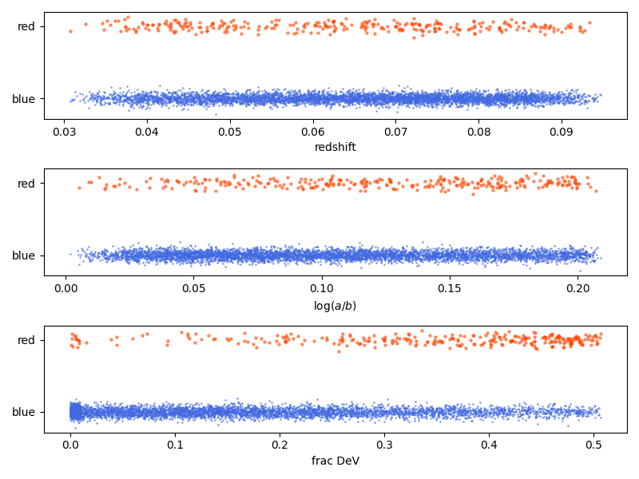
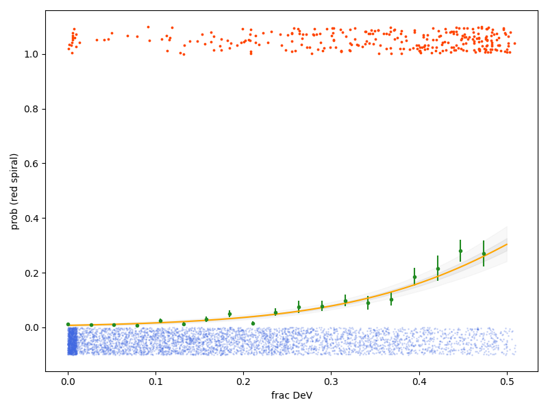
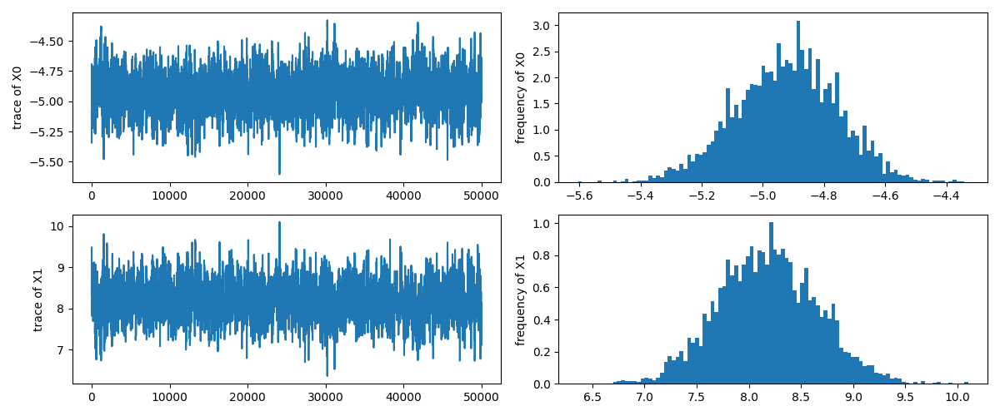
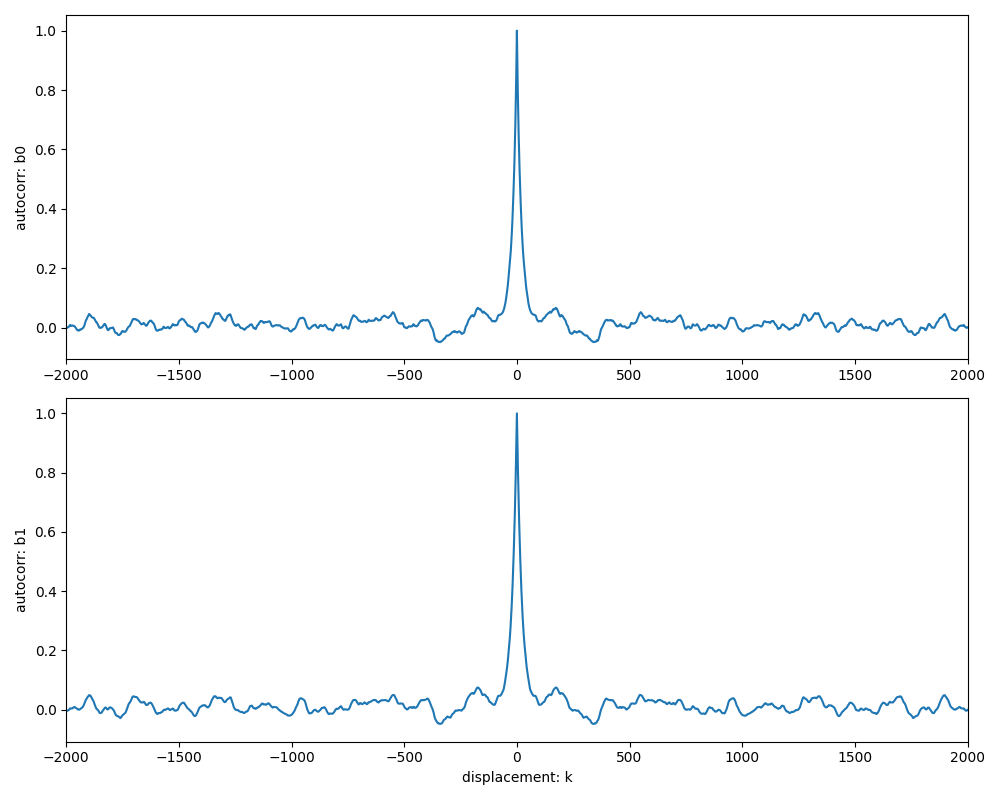
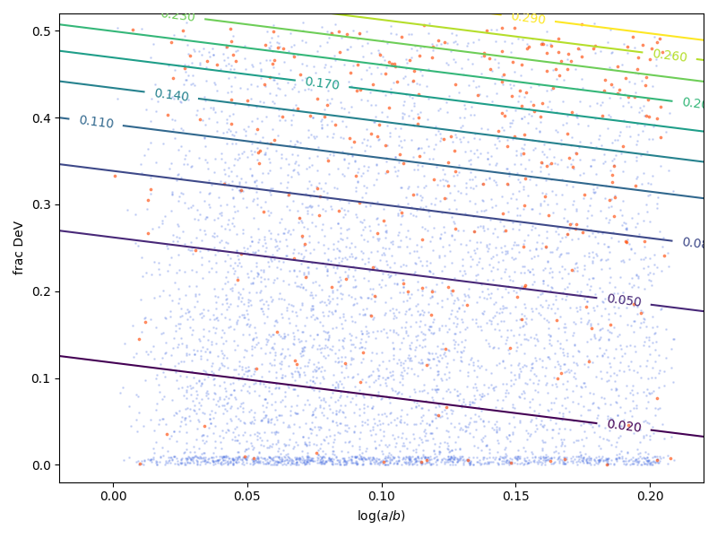
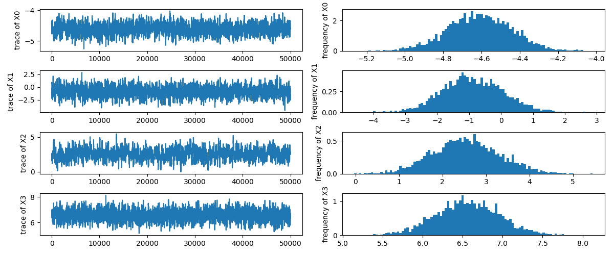
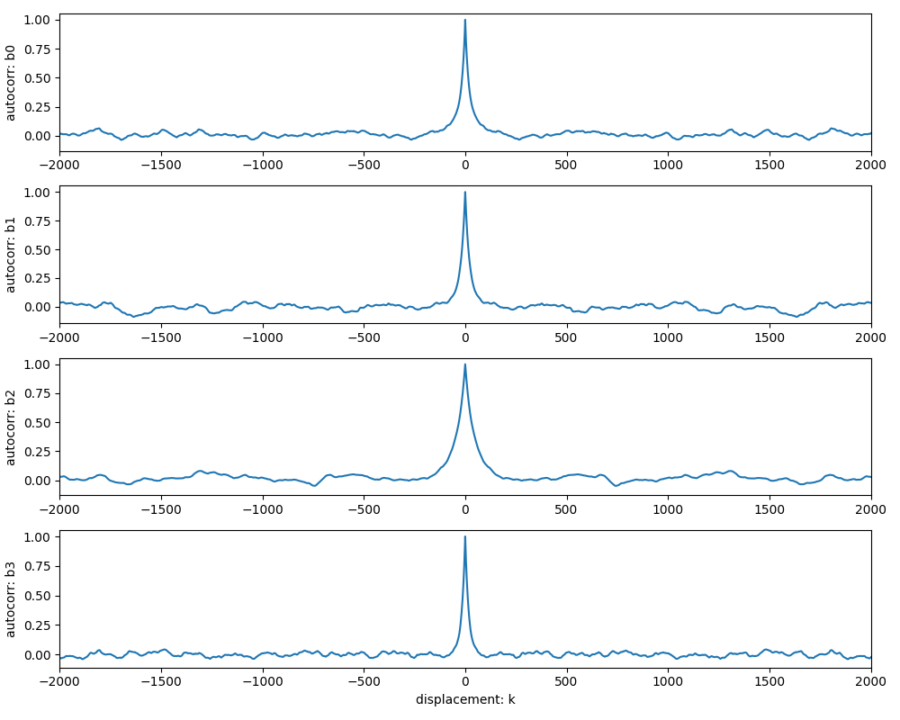

演習問題: ロジスティック回帰
ここでは 2 値分類モデル (ロジスティック回帰) を扱います. 対象があるクラスに含まれる確率を説明変数によって表すことを目的としています. ここでは SDSS Galaxy Zoo Data によって公開されている “Red Spirals” というデータセットを使用します.
通常, 銀河は赤い色をした楕円銀河と青い色をした渦巻銀河に分類されます. しかし, “Red Spirals” とは明らかに渦巻状の構造を有しているにも関わらず, 色が比較的赤い特徴を持った銀河です. Masters et al. (2010) では Galaxy Zoo のデータに基づいて “Red Spirals” の特徴を議論しています. ここでは Galaxy Zoo Data で公開されている “Red Spirals” (data) と “Blue Spirals” (data) のデータをマージして, どのパラメタが “Red Spirals” であることと相関があるかを調べます.
データ
演習用に整形したデータを以下からダウンロードしてください.
| ファイル名 | 形式 |
|---|---|
| exercise_logistic_regression.csv | csv |
データテーブルには以下のカラムが含まれています.
| カラム名 | 説明 |
|---|---|
| SDSS_objID | SDSS オブジェクト ID1 |
| redshift | 赤方偏移 (z) |
| M_r | SDSS \(r\) バンド絶対等級1 \(M_r\) |
| M_r_err | SDSS \(r\) バンド絶対等級の不定性1 \(\sigma_r\) |
| gr | SDSS \(g-r\) カラー1 |
| gr_err | SDSS \(g-r\) カラーの不定性1 \(\sigma_{gr}\) |
| logab | プロファイルフィットで求めた軸比 (対数) \(\log_{10}\mathrm{ax}\) |
| fracDeV | 銀河バルジの大きさの指標2 \(F\) |
| redspiral | Red Spiral 天体の場合は 1, そうでなければ 0 |
まずはデータを redspiral==1 と redspiral==0 に分けてプロットして, データの傾向をつかんでください.
Example
import numpy as np
import pandas as pd
import matplotlib.pyplot as plt
from numpy.random import default_rng
table = pd.read_csv('./exercise_logistic_regression.csv')
print(table)
gen = default_rng(2021)
cl = table.redspiral+gen.normal(0.0,0.05,size=len(table))
rs = table.redshift+gen.uniform(0.00,0.01,size=len(table))
ab = table.logab+gen.uniform(0.00,0.01,size=len(table))
fD = table.fracDeV+gen.uniform(0.00,0.01,size=len(table))
R,B = table.redspiral==1, table.redspiral!=1
sca = gen.uniform(0,0.01,size=len(table))
fig = plt.figure(figsize=(8,6))
ax1 = fig.add_subplot(3,1,1)
ax1.scatter(x = rs[B], y = cl[B], s=1, c='royalblue', alpha=0.5)
ax1.scatter(x = rs[R], y = cl[R], s=5, c='orangered', alpha=0.5)
ax1.set_xlabel('redshift')
ax1.set_yticks([0,1])
ax1.set_yticklabels(['blue','red'])
ax2 = fig.add_subplot(3,1,2)
ax2.scatter(x = ab[B], y = cl[B], s=1, c='royalblue', alpha=0.5)
ax2.scatter(x = ab[R], y = cl[R], s=5, c='orangered', alpha=0.5)
ax2.set_xlabel('$\log(a/b)$')
ax2.set_yticks([0,1])
ax2.set_yticklabels(['blue','red'])
ax3 = fig.add_subplot(3,1,3)
ax3.scatter(x = fD[B], y = cl[B], s=1, c='royalblue', alpha=0.5)
ax3.scatter(x = fD[R], y = cl[R], s=5, c='orangered', alpha=0.5)
ax3.set_xlabel('frac DeV')
ax3.set_yticks([0,1])
ax3.set_yticklabels(['blue','red'])
fig.tight_layout()
plt.show()
計算結果
SDSS_objID redshift M_r M_r_err gr gr_err logab fracDeV redspiral
0 587726033307107491 0.0486 -20.44 0.01 0.481 0.026 0.076 0.04 0
1 587725551197946034 0.0729 -21.99 0.01 0.639 0.017 0.113 0.29 0
2 587737809566630231 0.0448 -20.45 0.01 0.439 0.022 0.067 0.25 0
3 588017625628278943 0.0834 -21.06 0.01 0.386 0.020 0.145 0.43 0
4 588017948292022413 0.0707 -21.15 0.01 0.539 0.022 0.115 0.08 0
... ... ... ... ... ... ... ... ... ...
5427 587732579381542929 0.0448 -20.18 0.01 0.404 0.022 0.143 0.31 0
5428 588017978895761514 0.0651 -20.41 0.01 0.415 0.020 0.163 0.00 0
5429 588848899395682392 0.0364 -20.36 0.01 0.432 0.018 0.043 0.08 0
5430 587732483293511892 0.0642 -21.31 0.01 0.491 0.019 0.111 0.04 0
5431 587739609696174241 0.0433 -21.18 0.01 0.435 0.018 0.145 0.34 0
[5432 rows x 9 columns]
データが重なってしまい分布がわかりにくいため scatter を与えています. 
ロジスティック回帰
ロジスティック回帰とは \(i\) 番目のデータがタイプ \(T\) に属する確率 \(p_i\) を以下の式で表現するモデルです. 説明変数 \(x_i\) の線型結合によって \(z_i\) を定義し, \(z_i\) を S 字型 (sigmoid) の関数によって \([0,1)\) にマッピングします. \(z_i \to p_i\) の変換に使用している関数をロジスティック関数と呼びます.
\(N\) はデータの要素数を, \(x_{[j]}\) は \(x\) の \(j\) 番目の要素を表しています.
ロジスティック回帰のバックグラウンド
ロジスティック回帰が仮定していることについて簡単に説明します. できることなら説明変数 \(x\) を直接確率 \(p\) と結び付けたいのですが, \(p\) の domain は \([0,1]\) なので線形変換によって結びつけることは困難です. そこで確率そのものではなく, 確率のオッズ (odds) を考えます.
odds の range は \([0,\infty)\) です. まだ線形変換で結びつけるのは難しいので対数をとります.
この関数を logit 関数と呼びます. これで range が \((-\infty,\infty)\) になりました. 線形変換によって mapping できる可能性が出てきます. とりあえずこの値を \(z\) と置きました. この式を \(p\) について解くと以下のようになります.
ここで先程の logistic 関数が出てきました. 上記のようなロジスティック回帰は, データがタイプ \(T\) に属する確率 \(p\) のオッズの対数は説明変数 \(x\) の線型結合によって近似できるということを仮定として採用していることになります.
1 変数による回帰
まずは fracDeV のみを説明変数とするモデルを作成します.
ここで \(x_{[1]}\) は fracDev を表しています. Bernoulli 分布を採用すると \(y_i =\) redspiral として尤度関数は以下のように書けます.
この尤度関数を用いてパラメタ \(\beta\) の分布を導出してください.
Example
import numpy as np
import pandas as pd
import matplotlib.pyplot as plt
from scipy.stats import bernoulli as ber
from scipy.stats import norm as norm
from numpy.random import default_rng
from mhmcmc import MHMCMCSampler, GaussianStep
table = pd.read_csv('./exercise_logistic_regression.csv')
def logistic(z):
return 1/(1+np.exp(-z))
def log_likelihood(x):
p = logistic(x[0] + x[1]*table.fracDeV)
y = table.redspiral
return np.sum(np.log(y*p + (1-y)*(1-p)))
step = GaussianStep(np.array([0.50, 0.50]))
model = MHMCMCSampler(log_likelihood, step)
x0 = np.array([-5.0, 8.0])
model.initialize(x0)
sample = model.generate(51000)
sample = sample[1000:]
beta = sample.mean(axis=0)
fdev = np.linspace(0,0.5,200)
parr = logistic(sample[:,0].reshape((1,-1))
+ sample[:,1].reshape((1,-1))*fdev.reshape((200,1)))
psig = lambda x: np.percentile(parr, 100*norm.cdf(x), axis=1)
p = parr.mean(axis=1)
R,B = (table.redspiral==1),(table.redspiral!=1)
gen = default_rng(2021)
scx = gen.uniform(0.,0.01,size=table.shape[0])
scy = gen.uniform(0.,0.10,size=table.shape[0])
sig = p*(1-p)
bins = np.linspace(0,0.5,20)
nr,_ = np.histogram(table.fracDeV[R], bins=bins)
nb,_ = np.histogram(table.fracDeV[B], bins=bins)
frac = nr/(nr+nb)
efrac = np.sqrt(nr)/(nr+nb)
fig = plt.figure(figsize=(8,6))
ax = fig.add_subplot()
ax.fill_between(fdev, psig(-3), psig(3), color='gray', alpha=0.05)
ax.fill_between(fdev, psig(-1), psig(1), color='gray', alpha=0.10)
ax.errorbar(
bins[:-1], frac, yerr=efrac, fmt='.', c='forestgreen')
ax.scatter(
x = (table.fracDeV+scx)[R], y = (table.redspiral+scy)[R],
s=3, c='orangered')
ax.scatter(
x = (table.fracDeV+scx)[B], y = (table.redspiral-scy)[B],
s=1, alpha=0.2, c='royalblue')
ax.plot(fdev, p, c='orange')
ax.set_xlabel('frac DeV')
ax.set_ylabel('prob (red spiral)')
fig.tight_layout()
plt.show()
print(f'MCMC inference: beta0={beta[0]: .3f} (const)')
print(f' : beta1={beta[1]: .3f} (fracDeV)')
計算結果
MCMC inference: beta0=-4.923 (const)
: beta1= 8.181 (fracDeV)
fracDeV に対する Red Spirals の割合です. オレンジ色の曲線はロジスティック回帰によって得られた曲線です. 1-σ, 3-σ 誤差範囲を灰色の領域で示しています.

上記のサンプルで出力したトレースと自己相関関数を示します.  
多変数をもちいた回帰
redshift,logab,fracDeV を説明変数とするモデルを作成します.
ここで \(x_{[1],i}\) は redshift, \(x_{[2],i}\) は logab, \(x_{[3],i}\) は fracDeV とします. Bernoulli 分布を採用すると \(y_i =\) redspiral として尤度関数は以下のように書けます.
この尤度関数を用いてパラメタ \(\beta\) の分布を導出してください.
Example
import numpy as np
import pandas as pd
import matplotlib.pyplot as plt
from numpy.random import default_rng
from mhmcmc import MHMCMCSampler, GaussianStep
table = pd.read_csv('../../data/mcmc/exercise_logistic_regression.csv')
dat = table.loc[:,['redshift','logab','fracDeV']].to_numpy()
def logistic(z):
return 1/(1+np.exp(-z))
def log_likelihood(x):
p = logistic(x[0] + np.dot(dat,x[1:].reshape((-1,1))).flatten())
y = table.redspiral
return np.sum(np.log(np.clip(y*p+(1-y)*(1-p),1e-30,1)))-np.sum(x**2)/2
step = GaussianStep(np.array([0.3, 0.9, 0.5, 0.5]))
model = MHMCMCSampler(log_likelihood, step)
x0 = np.array([-2.0, 0.0, 0.0, 0.0])
model.initialize(x0)
sample = model.generate(51000)
sample = sample[1000:]
beta = sample.mean(axis=0)
R,B = (table.redspiral==1),(table.redspiral!=1)
gen = default_rng(2021)
rs = table.redshift
ab = table.logab+gen.uniform(0,0.01,size=table.shape[0])
fD = table.fracDeV+gen.uniform(0,0.01,size=table.shape[0])
fig = plt.figure(figsize=(8,6))
ax = fig.add_subplot()
lab_arr = np.linspace(-0.02,0.22,300)
fdV_arr = np.linspace(-0.02,0.52,300)
lab_mesh,fdV_mesh = np.meshgrid(lab_arr,fdV_arr)
grid = np.stack((lab_mesh.flatten(),fdV_mesh.flatten())).T
z_mesh = beta[0]+beta[1]*rs.mean()+np.dot(grid,beta[2:]).reshape((300,300))
p_mesh = logistic(z_mesh)
ax.scatter(x=ab[B], y=fD[B], s=1, c='royalblue', alpha=0.2)
ax.scatter(x=ab[R], y=fD[R], s=3, c='orangered', alpha=0.5)
levels = np.linspace(0.02,0.29,10)
cb = ax.contour(lab_arr,fdV_arr,p_mesh,levels=levels)
ax.clabel(cb, inline=True)
ax.set_xlabel('$\log(a/b)$')
ax.set_ylabel('frac DeV')
fig.tight_layout()
plt.show()
print(f'MCMC inference: beta0={beta[0]: .3f} (const)')
print(f' : beta1={beta[1]: .3f} (redshift)')
print(f' : beta3={beta[2]: .3f} (logab)')
print(f' : beta4={beta[3]: .3f} (fracDeV)')
計算結果
MCMC inference: beta0=-4.610 (const)
: beta1=-0.888 (redshift)
: beta3= 2.538 (logab)
: beta4= 6.559 (fracDeV)
logab と fracDeV の平面にデータ点をプロットして確率の等高線を引きました.

上記のサンプルで出力したトレースと自己相関関数を示します.  